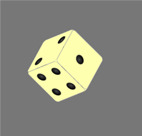

Animations can help engage users with your application and provide rich visual context for its various functions.
Web interfaces are driven by CSS style sheets. Web applications can dynamically apply different sets of style sheets, and CSS transitions can make those interface shifts animate gradually. CSS keyframe animations offer more flexibility, and are not tied to shifts between style sheets.
CSS Transitions
This example expands a navigation panel from a small icon:
Tapping on the element toggles its expanded class, which alters its width, border, and background-position properties. The -webkit-transition property animates specified properties, all in this case, over the course of one second:
#navbar { -webkit-transition: all 1s; border: solid #fff 2px;; background-image: url(../img/i0.png); background-position: 90% 50%; width: 36px; } #navbar.expanded { border: solid #aaa 2px; width: 280px; background-position: 200% 50%; }
Icons within the navigation panel also animate. The opacity property fades them in, and the scale transform zooms them in:
#navbar > a { -webkit-transition: all 1s; opacity: 0; -webkit-transform: scale(0); } #navbar.expanded > a { opacity: 1; -webkit-transform: scale(1); }
Tapping on any of the icons causes another panel to slide in, first horizontally, then vertically. This sequence relies on a two-state transition that manipulates the element's height and translate() transform function independently:
#panel { -webkit-transition: height 0.5s 0.0s, -webkit-transform 0.5s 0.5s; -webkit-transform: translateX(-120%); height: 10%; } #panel:target { -webkit-transition: -webkit-transform 0.5s 0.0s, height 0.5s 0.5s; -webkit-transform: translateX(0%); height: 100%; }
Both animations within the sequence last half a second, and the second is delayed by the same amount.
Transition Events
Applying a webkitTransitionEnd event handler allows you to execute subsequent transitions conditionally, or to perform any other action after a transition finishes executing. This example resembles the previous sequence, but implements transitions separately with higher and wider CSS classes:
div {
background: #000;
width: 100px;
height: 100px;
-webkit-transition: all 0.5s;
}
.wider { width: 200px; }
.higher { height: 200px; }
After the initial transition executes, this example prompts users if they want to continue:
document.querySelector('div').addEventListener('click', function(e) { if (e.target.classList.length == 0) { e.target.classList.add('wider'); e.target.dataset.direction = 'expand'; } else if (e.target.classList.length == 2) { e.target.classList.remove('higher'); e.target.dataset.direction = 'collapse'; } else { confirm('OK to expand?') ? e.target.classList.add('higher') : e.target.classList.remove('wider'); } }); document.querySelector('div').addEventListener( 'webkitTransitionEnd', function(e) { if (e.target.classList.length == 1) { e.target.dataset.direction == 'expand' && confirm('expand further?') && e.target.classList.add('higher'); e.target.dataset.direction == 'collapse' && confirm('collapse further?') && e.target.classList.remove('wider'); e.target.dataset.direction = ''; } console.log( e.propertyName + ", " + e.elapsedTime + 's' ); });
The event's propertyName corresponds to the value of each -webkit-transition-property that completes its transition. The elapsedTime correponds to each -webkit-transition-duration.
CSS Keyframe Animations
CSS transitions apply to shifts between distinct interface states. CSS keyframe animations allow for more complex effects, and can be applied more freely, for example to execute animations continuously. This example inserts a series of scrolling banner ads into the interface:
After an initial 4-second delay, an animation titled push_down is applied to the main panel, which takes 1 second to execute:
article {
-webkit-animation: push_down 1s 4s;
-webkit-animation-fill-mode: both;
}
The animation is defined elsewhere within the CSS region, within a @-webkit-keyframes rule. Each keyframe manipulates CSS properties over the course of the animation:
@-webkit-keyframes push_down { from { margin-top: 0em } to { margin-top: 4em } }
The -webkit-animation-fill-mode property avoids abrupt transitions before and after keyframes execute. It specifies that the keyframe's initial value for each manipulated property overrides the element's default property, so that the animation's initial appearance precedes any delay. The final state of each property also persists after the animation finishes executing.
The scrolling banner specifies a series of two animations. The first (slide_down) executes once, after the same 4-second delay, with its properties filling backward so that they persist after the animation stops:
header {
-webkit-animation-name : slide_down , scroll;
-webkit-animation-duration : 1s , 20s;
-webkit-animation-delay : 4s , 5s;
-webkit-animation-iteration-count : 1 , infinite;
-webkit-animation-fill-mode : backward , both;
-webkit-animation-play-state : running;
}
The corresponding keyframe drops the element from above the top of the screen:
@-webkit-keyframes slide_down { from { -webkit-transform: translateY(-10em) } to { -webkit-transform: translateY(0) } }
The second scroll keyframe executes over the course of 20 seconds, delayed after the initial set of animations execute, with the infinite iteration count setting it to run continuously. Intermediary keyframe states are represented as percentages:
@-webkit-keyframes scroll { 0% { -webkit-transform: translateX(0) } 17% { -webkit-transform: translateX(0%) } 20% { -webkit-transform: translateX(-20%) } 37% { -webkit-transform: translateX(-20%) } 40% { -webkit-transform: translateX(-40%) } 57% { -webkit-transform: translateX(-40%) } 60% { -webkit-transform: translateX(-60%) } 77% { -webkit-transform: translateX(-60%) } 80% { -webkit-transform: translateX(-80%) } 97% { -webkit-transform: translateX(-80%) } 100% { -webkit-transform: translateX(0%) } }
The scrolling element has a column-count of 5 and a width of 500%, so the translations are measured relative to that wide element.
Animations can be paused as they progress. Tapping the scrolling bar in this example toggles a pause class. When applied, it pauses the scroll animaton and triggers a secondary pulse keyframe that makes inner banner elements fade in and out:
.pause { -webkit-animation-play-state: paused; } .pause > div { -webkit-animation : pulse 0.5s infinite; -webkit-animation-direction : alternate; } @-webkit-keyframes pulse { from { opacity: 1 } to { opacity: 0.5 } }
Note the keyframe's start and end state differ, but its direction is set to alternate forwards and backwards on successive odd/even iterations.
Resources
- Richard Bradshaw: Using CSS3 Transitions, Transforms and Animation
- W3C: CSS Transitions Module Level 3
- W3C: CSS Animations Module Level 3
XXX G
This section provides guidance on how CSS-based animations can be incorporated into vibrant mobile interfaces. It discusses two related CSS features. Transitions animate between two sets of style sheets. Keyframe animations enable free-form animation sequences. (Many of the examples in this section also demonstrate transforms, potentially complex but otherwise static visual effects discussed in the following section.)
Note: Animations can also be implemented with Canvas or SVG graphics libraries, but CSS animations are most useful when designing an overall interface. CSS-based animation also offers a tangible performance boost over animations implemented with JavaScript timers.
Transitions
Transitions specify gradual shifts from one set of style sheets to another. They help prevent abrupt jumps from one display state to another, which can be particularly disorientating in smaller-screen mobile interfaces.
Transitions specify properties to animate, the animation's duration, the function affecting the animation's progress, and an optional delay before the animation starts.
The following example shows a series of transitions of a <nav> element, from a collapsed icon state to an expanded panel:


Each style sheet specifies a different max-width value, and the transition allows the value to shift over the course of half a second:
nav.expanded { max-width : 95%; } nav.collapsed { max-width : 10%; } nav { -webkit-transition : max-width 0.5s ease-in-out; }
The transition shown above appears the same in both directions, but specifying properties separately for each style sheet allows them to be customized. In this variation, the panel takes twice as long to expand than to collapse:
nav.collapsed { max-width : 10%; -webkit-transition : max-width 0.5s ease-out; } nav.expanded { max-width : 95%; -webkit-transition : max-width 1s ease-in; }
The combined -webkit-transition property combines individual properties. (See Timing Functions below for more information on the -webkit-transition-timing-function property.)
nav {
-webkit-transition-property : max-width;
-webkit-transition-duration : 0.5s;
-webkit-transition-timing-function : ease-in-out;
}
When shifting from one interface state to another, transitions can shift between more than one pair of style sheets. The example above specifies an additional transition that fades and zooms in icons that are nested within the navigation panel, providing the overall appearance of a single animation effect:
nav > .option { -webkit-transition : all 0.5s linear; } nav.expanded > .option { opacity : 1; -webkit-transform : scale(1.0); } nav.collapsed > .option { opacity : 0; -webkit-transform : scale(0.0); }
The fade is specified using opacity, and the zoom effect with -webkit-transform, discussed in the next section. A transition property of all applies to any valid property that differs between the two states.
Transitions apply not only to predefined style sheets, but more flexibly to values that are assigned dynamically, which helps to smooth shifts between application states. The example above would also display a transition if the max-width value were assigned directly to the element:
icon.style.maxWidth = '95%';
Note: CSS transitions perform robustly in response to ambiguous user input. As the navigation panel expands in the example above, tapping elsewhere gracefully interrupts and reverses the transition to its collapsed icon state.
What Can Be Transitioned?
Most any CSS property expressed as a simple numeric measurement or color value can be transitioned between two style sheets. Color names correspond internally to numeric values, so they can be transitioned, along with keywords such as thin and thick that apply to border-width.
Transitions don't affect named values that refer to discrete states, such as the left and right properties used by text-align. Property values that feature complex syntax, such as for gradients, masks, and reflections, also cannot be transitioned.
In the example above, the max-width property in each style sheet specifies measurements as percentage units. Transitions may not work properly between fixed and flexible units.
Transitions cannot be applied to dynamically inserted content via :before and :after dynamic class selectors.
Transitions also cannot be applied to dynamically positioned elements. The following example shows a list of stacked items that rearrange themselves when they are dismissed or filtered away:


Items must be assigned to a grid, and can't be animated by letting the browser stack them freely. However, implicit CSS values may be transitoned. For example, a transition to a specific background-color from a set of style sheets that don't specify any color assume the default value of transparent.
Transitional Sequences
As shown above, separate transitions can be applied simultaneously to different sets of elements. Alternately, more than one transition can be applied to the same set of elements.
Each transition property can accommodate more than one value, each separated with a comma. Applying an accompanying delay allows for transitions to appear in sequence. The following example shows how a panel may expand in two half-second stages that modify the width followed by the height, then reverse the sequence when collapsing:
nav.expanded { -webkit-transition-property : width, height; } nav.collapsed { -webkit-transition-property : height, width; } nav { -webkit-transition-duration : 0.5s, 0.5s; -webkit-transition-delay : 0.0s, 0.5s; }
The following example uses these sequential transitions to slide out an embedded a navigation panel:


The following example shows a photo gallery interface that uses the same technique to flip images to reveal descriptive text. It relies on a sequence of simple 2D scale transforms, one that narrows the first visible element, followed by another that widens the second hidden one:


This example shows how flexibly transitions may be applied. When users tap on adjacent photos, the panel automatically flips back to its original state as it is moved to the side.
Timing Functions
Timing properties allow the speed at which transitions (and keyframe animations) progress to vary over their duration.
If a timing function's value specifies the linear keyword, the transition starts and stops abruptly, and its speed remains constant. Otherwise, timing functions specify progress in terms of a bezier curve whose control points are expressed as decimals. Various keyword values correspond to bezier functions as follows:
- linear: cubic-bezier(0.0, 0.0, 1.0, 1.0)
- ease (default): cubic-bezier(0.25, 0.1, 0.25, 1.0)
- ease-in: cubic-bezier(0.42, 0, 1.0, 1.0)
- ease-out: cubic-bezier(0, 0, 0.58, 1.0)
- ease-in-out: cubic-bezier(0.42, 0, 0.58, 1.0)
The following example demonstrates various preset timing functions and custom cubic-bezier() functions:
See netzgesta.de for an interactive visualization of how preset and cubic-bezier() timing functions appear as a response curve.
Keyframe Animations
Keyframe animations offer an easy way to specify sequences involving many animated transitions. Unlike transitions, they can execute freely, and are not assigned to shifts between sets of style sheets.
The following example shows a simple animation of icons that pulse three times when tapped:

It uses the following CSS, shown here in both abbreviated and long form:
nav > a:target { -webkit-animation : pulse 0.5s 3; } nav > a:target { -webkit-animation-name : pulse; -webkit-animation-duration : 0.5s; -webkit-animation-iteration-count : 3; }
As with transitions, the duration specifies the length of the entire animation, in this case half a second. By default, animations execute once, but setting an integer iteration-count allows them to repeat. The infinite keyword runs the animation continuously. The animation must have a name, with a corresponding keyframes rule detailing the animation's full progression, specified elsewhere within the CSS:
@-webkit-keyframes pulse { 0% { opacity : 1.0 } 50% { opacity : 0.5 } 100% { opacity : 1.0 } }
This animation shifts between two different opacity values over the course of a half second, with percentages marking intermediary states within the course of the animation. Like regular CSS selectors, each intermediary state can specify various CSS properties.
The following shows a different way to implement this simple animation:
@-webkit-keyframes pulse { from { opacity : 1.0 } to { opacity : 0.5 } } nav > a:target { -webkit-animation : pulse 0.25s 0.5s 6 alternate linear; } nav > a:target { -webkit-animation-name : pulse; -webkit-animation-duration : 0.25s; -webkit-animation-iteration-count : 6; -webkit-animation-direction : alternate; -webkit-animation-delay : 0.5s; -webkit-animation-timing-function : linear; }
In this case, the keyframe animation only defines half of the entire visual sequence. Instead, the animation's direction is alternated, so that even-numbered iterations are played back in reverse. (To match the original appearance, the iteration count is doubled, and the duration is halved.)
This modified animation adds a half-second delay, in this case to allow enough time for the user's finger to lift from the mobile screen to see the entire animation execute. It also specifies a linear timing-function apply to shifts within the animation.
The following example shows a more complex sequence of alternating rapid shifts and longer static phases, in which five banner options scroll continuously at the top of the screen. (It uses translations to manipulate a multicolumn element that is five times the width of the window.)
The example above executes continuously when the page loads. The sliding-navigation example below executes once when the page loads, but contextually based on the target of navigation within the page:
The following slide-show example assigns the same animation to many elements, sliding them in and out of view. It specifies progressively longer delays to each element to build a larger sequence, with one element's duration extended to provide more time to read it:
The animation provides the illusion that the incoming slide hits a hard barrier, while outgoing slides speed up gradually. This can be accomplished by changing the timing function during the course of the animation:
@-webkit-keyframes slideFrame { from { -webkit-animation-timing-function : linear; -webkit-transform: translate(-150%) skewX(5deg); } 10% { -webkit-transform : translate(0) skewX(5deg); } 15% { -webkit-animation-timing-function : default; -webkit-transform : translate(0) skewX(-5deg); } 20% { -webkit-transform : translate(0) skewX(0deg); } 90% { -webkit-transform : translate(0) skewX(0deg); } to { -webkit-transform : translate(150%) skewX(10deg); } }
As is true for transitions, an element may be assigned more than one keyframe animation:
.pair_keyframes { -webkit-animation : anim1 1s 2 alternate, anim2 2s; }
Even if one of the animations is delayed, each keyframe rule must manipulate different sets of CSS properties, or it does not work. Animations may also execute along with transitions, as in the following example.

| @-webkit-keyframes nod { from { -webkit-box-shadow : transparent 0 0 0 0; background-position : 50% 50%; } 20% { background-position : 50% 90% } 40% { background-position : 50% 10% } 60% { background-position : 50% 90% } 80% { background-position : 50% 10% } to { background-position : 50% 50%; -webkit-box-shadow : lightgreen 0em 0em 0.5em 0.25em; } } |
The accompanying CSS shows how the two separate visual effects might be consolidated within a single keyframe rule, with the start and end value of the -webkit-box-shadow property matching the initial and destination style sheet, to simulate a transition.
Dynamic Keyframes
Keyframe animations can be initiated by changing the animation-name to one with a matching keyframe rule. This can be done by applying a style sheet, or by manipulating elements directly:
element.style.WebkitAnimationName = 'roll';
Dynamically generated keyframe rules only activate when added to a local <style> region within the page. They can be redefined immediately after they execute, as the animation proceeds.
The following example shows a gaming dice piece built with 3D transforms. An additional keyframe animation spins the entire cube using an additional set of randomly generated 3D transforms. Tapping the element applies the roll class, which changes the animation name from a default empty string to one that matches a keyframe rule:
| 
| .dice { -webkit-animation-name : ""; -webkit-animation-duration : 1s; -webkit-animation-iteration-count : 2; -webkit-animation-direction : alternate; -webkit-animation-timing-function : linear; } .roll { -webkit-animation-name : haphazard_spin; } @-webkit-keyframes haphazard_spin { from { -webkit-transform: rotateX(20deg) rotateY(40deg) rotateZ(30deg) } 25% { -webkit-transform: rotateX(190deg) rotateY(220deg) rotateZ(300deg) } 50% { -webkit-transform: rotateX(220deg) rotateY(160deg) rotateZ(80deg) } 75% { -webkit-transform: rotateX(20deg) rotateY(40deg) rotateZ(230deg) } to { -webkit-transform: rotateX(184deg) rotateY(300deg) rotateZ(150deg) } } |
Applications may halt animations in progress by setting -webkit-animation-play-state to paused or back to running:
element.style.WebkitAnimationPlayState = 'paused'; element.style.WebkitAnimationPlayState = 'running';
If there is a difference between an element's conventional set of CSS properties, and CSS properties as they are defined at the start and end of a keyframe rule, they may become conspicuous if the animation is delayed, or if it executes a finite number of times. Setting -webkit-animation-fill-mode to forwards, backwards, or both determines whether the set of CSS properties that bounds the keyframe sequence appears outside the duration of its execution, potentially overriding properties not defined in keyframes.
The following example allows users to initiate a marquee-style scroll. Tapping on the ellipses that mark overly long song titles generates a custom keyframe based on the scrollWidth of the overflowing element, so that longer song titles scroll more quickly than short ones. The keyframe manipulates the text-indent property to scroll the element off to the left, hide the text while it is repositioned off to the right midway through the animation, then scroll it back into view:

| @-webkit-keyframes custom { 0% { text-indent: 0% ; color: #000 } 49% { text-indent: -125% ; color: #000 } 50% { text-indent: -125% ; color: transparent } 51% { text-indent: 125% ; color: transparent } 52% { text-indent: 125% ; color: #000 } 100% { text-indent: 0% ; color: #000 } } |
Note: In the animation above, the text-indent property is defined redundantly within the 49% and 50% keyframes. It accounts for a slight variation in how browsers interpret keyframes. Removing the text-indent property from the 49% keyframe may lead some browsers to assume the property should transition smoothly between the 0% and 50% keyframes. Others may assume the 49% keyframe should be filled with the property's last known value, zero, which in this case would lead to a long static period followed by an unintentionally abrupt transition.